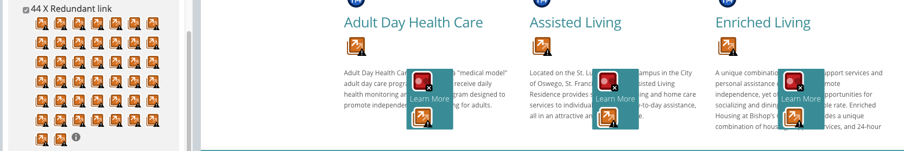
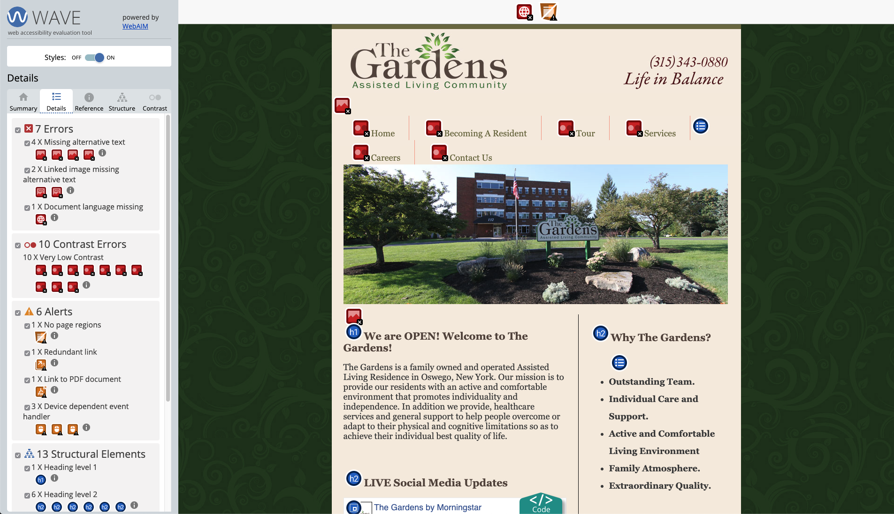
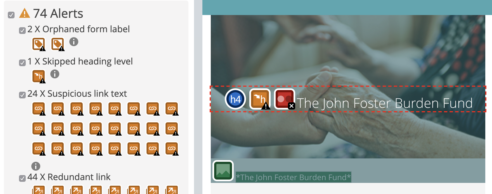

Acessibility
An accessibility study on websites
This is an acedamic project for Web Design class. An accessibility study is condicted on three adult care websites in Upstate New York.
This is an aura of the web, we use the web in our daily life activities and have changed the way we do shopping, having education, making business, getting entertainment and so many other things. Websites are designed to work for everyone and on any type of device regardless of which software, language or where it is located at. If a website is built having this goal in mind, then it would be accessible to everyone even with hearing disability, having movement problems, who are visually impaired and also cognitive ability.
Why apply accessibility standards?
Having a website that could be accessible to disables, it will allow them to be independent in getting all the information on the web. A web that is not accessible to everyone might get a decreasing rate of users.
Unfortunately, many web developers do not consider applying these guidelines and techniques while creating websites. Every designer should design websites that can be accessible to all users, regardless of their physical or cognitive abilities, technological requirements, education, and experience.
It has now been made a legal requirement for websites to be accessible following the guidelines of World Wide Web Consortium’s (W3C) and Web Content Accessibility Guidelines (WCAG) 2.0, which has three levels of accessibility that are accepted as international standards: A, AA, AAA.
Principles of Accessibility
The standard guidelines for WCAG are organized into four principles of accessibility:(Rallo, Adam, et al., 2019)
- Perceivable
Information should be presented in a processable format.
- Operable
People with disabilities should be able to operate the website.
- Understandable
Using clear and concise language along with ease in using the functionality on the website.
- Robust
The website should work across multiple platforms (including assistive technologies), browsers and devices.
Purpose of this study
The purpose of this study is to evaluate three different Adult Care websites in Upstate New York.
Tools used for testing accessibility standards
Some softwares which helps in quickly detecting some issues with compliance.
- HTML and CSS code validators
- AChecker
- WAVE Web Accessibility Evaluation Tool
- Axe Developer Tools
- Dynolitics- Now referred to as popetech
- Other manual tests include: keyboard and screen reader
Adult Care Websites
Adult Care centers provide facilities to older people who need assistance or supervision. Such centers offer relief to other family members and caregivers assuring that their relative is well cared for and safe.
Such centers require websites to be accessible as their end users could be anyone ranging from family members or caregivers to the adults themselves trying to find the right care facility.
It would be really painful if the website won't be accessible to a person who is disabled.
Websites Evaluated:
Evaluation
Is the code valid?
An HTML and CSS validator check was run through all three websites and the following results were found:
- was missing required accessibility feature like the alternate text on an image
- the use of improper hierarchy in headings
- lacking semantic use of HTML elements
How to avoid code errors?
Having effective alt-text on the image provides a useful description of the non-text content and will also respect the users time and is written with clarity, economy, and structure.
Proper use of semantic HTML elements is crucial. Non-standard, invalid or broken code can disproportionally affect those who rely on assistive technologies (Rallo, Adam, et al., 2019).
Arranging a page into sections and further dividing it into semantic subheadings, helps users with assistive technology.
Testing for Accessibility
As mentioned above, different assistive tools were used for testing the accessibility feature of the website.
All the three websites were tested using the Accessibility Insights for Web and the WAVE tool of the Chrome browser extension.
The video above is an example of how the tabbing works Erie County, NY adult care website. This test was performed using the Accessibility Insights for Web chrome extension. If you see in the video, the numbering refers to the sequence it follows on the web page for the links. As the links go down at the bottom of the page, after the LogIn button it is difficult to say where the tab is moving for what links.
As seen in the image above of the St Luke Family of caring, the use of "Learn More" for linking a new page/content doesn't help the screen readers to identify the purpose of the link and gives a redundant link alert in accessibility tool tester. A proper description of where the link will lead a user to would be helpful.
The use of color contrast on the website is also very important. Users with a visual disability must be able to perceive the content on the page (Rallo, Adam, et al., 2019).
The image above is an example of the usage of very low color contrasts. The main navigation of the website is not meeting the color contrast ratios. The users with a visual disability won't be able to navigate the website.
A way to fix the low color contrast is to increase the contrast between the foreground (text) color and the background color. Large text (larger than 18 point or 14 point bold) does not require as much contrast as smaller text (WebAIM).
WebAIM has been conducting screen reader surveys since May 2012, and have conducted four surveys till now. They have mentioned in their study that the use of properly structured headings remains of great importance. As demonstrated in the image below, a heading level is skipped. Headings provide document structure and facilitate keyboard navigation by users of assistive technology. These users may be confused or experience difficulty navigating when heading levels are skipped (WebAIM).
Why are these important?
Despite the advancement in technology and all the devices or tools available for accessibility, some webpages are not open for all people.
A website for adult care services could be used by anyone. The user could be an adult themselves, a caretaker who might be a person with a disability.
Conclusion
The purpose of this study was to evaluate three adult care websites on common web accessibility problems. For the study, tools like HTML and CSS code validators were used along with browser extensions for Chrome like WAVE and Accessibility Insights to evaluate the web accessibility standards.
The most common errors found while evaluating the websites and how you could improve them:
- Adding proper alternative text on the images. This will help with the screen readers to describe what the content and meaning of the image is.
- Form controls need to be labeled correctly with a descriptive and meaningful text. Also, checking the tab order in the form would be helpful.
- Test your websites with accessibility tools. A keyboard test is recommended. Accessibility insights browser extension provides a tabbing sequence that helps the developer make each link on the webpage navigable by only keyboard use.
References
Rallo, Adam, et al. AccessAbility 2: A Practical Handbook on Accessible Graphic Design. Revised + Supersized Second Edition. The Association for Registered Graphic Designers (RGD), 2019.